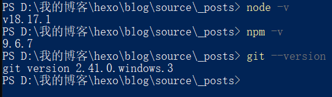
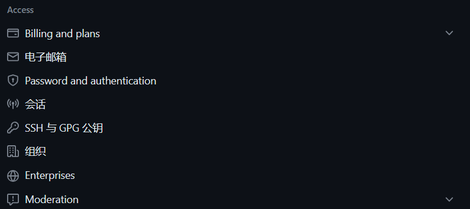
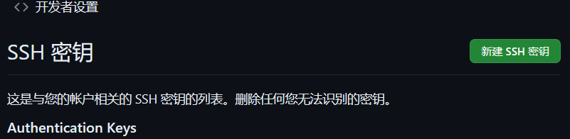
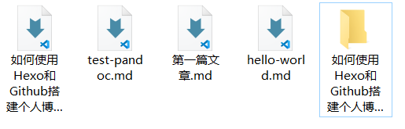

如何使用Hexo和Github搭建个人博客
环境配置
注意事项
- 输入代码时候,切换为英文输入法
- 文中的用户名和邮箱替换为自己的GitHub的账户名和绑定的邮箱
- 使用Git Bash而不是Git GUI
- 以Windows10系统为例
- 假设已经拥有GitHub账户
- 博客根目录就是下载hexo的地址
- 在不熟悉操作的前提下请不要跳步
安装Git和Node.js
首先在Git中下载和自己电脑系统相适应的版本;然后再Nodes中下载Nodes.js,这里建议使用长期维护版.
下载之后的安装一直点击next就好.
安装完成之后,在cmd中输入命令查看版本:
1 | node -v |
1 | npm -v |
1 | git --version |

配置GitHub
连接GitHub
首先,在博客根目录中右键打开git bash,输入命令设置用户名和邮箱
1 | git config --global user.name |
然后,将Git绑定远程GitHub账号
1 | ssh -keygen -t rsa -C "GitHub注册邮箱" |
运行了上述指令之后,按下三个回车,然后复制C:\Users\user-name\.ssh中的id_rsa.pub中的内容.注意这里的user-name就是计算机用户的名字,每个人的不一样.
然后,进入GitHub个人账号,Setting->SSH and GPGkeys -> New SSH key


最后验证连接,在博客根目录下打开Git Bash输入ssh -T git@github.com,会得到Hi user.name! You've successfully authenticated, but GitHub does not provide shell access. 这样的回复,就说明连接已经成功了.
建立GitHub Pages 仓库
在主页面点击头像,进入我的仓库,然后在顶部点击Create new建立一个新的仓库,在Repository name 中输入user-name.github.io,勾选Initialize this repository with a README,然后点击Create repository
Hexo配置
Hexo博客程序的本地安装
这个建立在Node已经成功安装的基础上,首先使用npm安装Hexo,这里建议使用魔法,不然下载会很慢.
1 | npm install -g hexo-cli |
Hexo初始化和本地预览
首先在cmd中输入以下命令,实现初始化和组件安装:
1 | hexo init # 初始化 |
1 | npm install # 安装组件 |
然后在git bash中输入命令,启动本地服务器并预览:
1 | hexo g # 生成页面 |
访问http://localhost:4000,出现了Hexo默认页面,说明本地博客安装成功
博客的目录结构
1 | . |
部署Hexo到GitHub Pages
首先,安装hexo-deployer-git:
1 | npm install hexo-deployer-git --save |
然后修改_config.yml文件末尾部分,结果如下:
1 | deploy: |
然后,使用在git bash中使用hexo d把网站上传并部署到GitHub Pages.
然后访问https://user-name.github.io就可以看到自己的HExo博客了, 不过这里还没有自己写的内容
年轻人的第一篇博客
建立书写博文
在source文件夹中,使用hexo new "first post"会建立一个first post.md文件,然后使用vscode之类的文本编辑器就可以以Markdown语言书写自己的博客文章了.
另一种建立方法
也可以不使用命令自己创建 .md 文件，只需在文件开头手动加入如下格式 Front-matter 即可:
1 | --- |
部署发布
依次使用git bash命令:
1 | hexo g # 生成页面 |
其他问题
更换主题
比如要下载一款经典的butterfly主题,只要在Blog根目录下打开git bash,然后输入git clone -b master https://github.com/jerryc127/hexo-theme-butterfly.git themes/butterfly就实现了下载.
然后在_config.yml文件中修改配置theme: butterfly
最后清除缓存hexo clean,再重新建立hexo g
插入图片
下载插件
1 | npm install hexo-asset-image --save |
在~\blog\node_modules\hexo-asset-image中的index.js中的第58行把
1 | $(this).attr('src', config.root + link + src); |
修正为:
1 | $(this).attr('src', src); |
修改配置文件
在_config.yml配置文件将post_asset_folder:false改成true
之后使用hexo new "blog name"的时候会同时生成同名文件夹用来存放资源(将所有图片放在这个文件夹内)
1 |  |

利用VScode插件快速粘贴图片
下载插件Paste Image ,在剪贴板有图片的情况下,按下ctrl+alt+v就会把图片插入到光标所在位置.
但是这个时候图片存在的位置不对,在编译之前把它们放到正确的文件夹中.
npm书写规范
1 | --- |
插入视频连接
要在你的页面中播放Bilibili视频，而非直接跳转到Bilibili网站，你可以使用特定的播放器插件或工具来实现.在这种情况下，你可以尝试使用Bilibili的官方播放器插件“bilibili-player”，或者使用其他类似的第三方播放器插件来嵌入视频.
以下是一种使用bilibili-player插件的示例方法：
首先，确保你已经引入了bilibili-player插件的必要脚本和样式文件。然后，将以下代码插入到你想要显示视频的位置：
1 | <div class="bilibili-player"> |
确保将视频的BV号（bvid）替换为你想要嵌入的Bilibili视频的BV号.样，视频就会在你的页面中显示，并且只有在点击时才会跳转到Bilibili网站.
要调整嵌入视频的页面大小，你可以修改iframe元素的width和height属性值.通过调整这些值，你可以控制视频播放区域的宽度和高度:
1 | <iframe src="https://player.bilibili.com/player.html?bvid=BV1FV4y1e7fB" scrolling="no" border="0" frameborder="no" framespacing="0" allowfullscreen="true" allow="autoplay" |